| 2つの後輪の中点 | |
| 前輪の回転軸と後輪の回転軸の交点 (回転中心) | |
| 操舵軸 | |
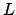 |
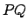 間の距離 (0.4 [m]) |
| 車両の姿勢角 [rad] | |
| 操舵角 [rad] | |
| 三輪車の軌跡 |
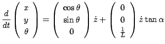 |
(A.1) |
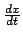
と制御して いると考えてもよい．制御方策は，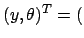
目標起動との偏差，姿勢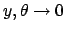
に追従させるようなことを実現すればよい．このシステムのシミュレーション方法を以下に述べる．但し，シミュレーションで は間の距離を
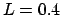
[m]としている．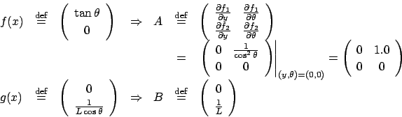 |
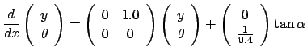 |
(A.3) |
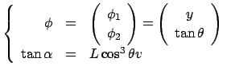 |
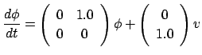 |
(A.4) |